Cilantro and Spinach Cashew Pesto
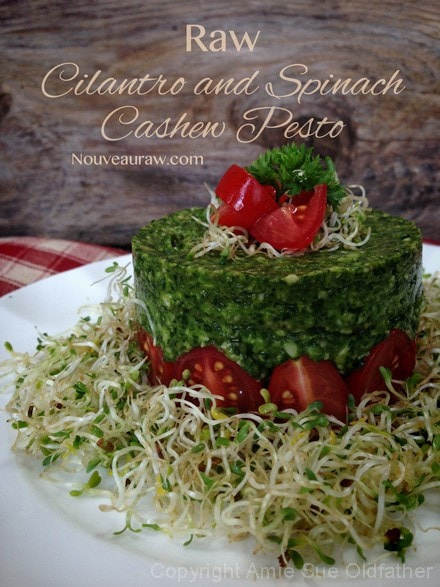
~ raw, vegan, gluten-free ~
I created this pesto with no end dish in mind. Will I toss it with zucchini noodles as expected? Been there, done that… there had to be something different, but I didn’t know just exactly what, but there was no doubt it would come to me when the timing was right.
As the title indicated, cilantro is one of the main ingredients in this recipe. Up until I hit the age of about 36, I didn’t care for cilantro, it always had a soapy taste to me. I had what they call cilantrophobia. I would pick it out of every salsa that came my way. Do you realize what a full-time job that was? hehe There are studies that even show that some people may be genetically predisposed to dislike cilantro. I was convinced that was me. I was born without cilantro receptors on my tongue. :)
But then, I introduced the raw diet into my life and that got ahold of my taste bud control panel and it started flipping switches. Soon I began to like cilantro and I found myself adding it to my dishes… on purpose! :) There are times that it can still remind me of soap, but it’s not as threatening to me anymore, so that association of it tasting like soap, has faded into the background.
And thank goodness, because there are a lot of great health benefits to be had. I learned that cilantro is often recognized as being effective for toxic metal cleansing. The chemical compounds in cilantro bind to toxic metals and loosen them from the tissues. Many people suffering from mercury exposure report a reduction in the often-cited feeling of disorientation after consuming large and regular amounts of cilantro over an extended period. (source)
It is also rich in antioxidants, essential oils, vitamins, and dietary fiber. Cilantro is one of the richest herbal sources for vitamin K. AND cilantro leaves only have 23 calories/100 g. Not sure I love it that much to wonder if I am adding too many calories in my cilantro consumption. hehe There are so many other great things that I read about this leafy veggie and I encourage you to look it up sometime.
It is always best to buy fresh leaves over the dried herb since it is superior in flavor, vitamins, and anti-oxidants. When selecting fresh cilantro, look for vibrant green color leaves and firm stems. It should be free from any kind of spoilage or yellowing. Once at home, wash in clean water, discard roots, any old or bruised leaves. Fresh cilantro should be stored in the refrigerator in a ziplock bag or wrapped in a slightly damp paper towel. Use as soon as possible since it loses flavor and nutrients quickly.
I used cashews in place of pine nuts which are the common nuts used in pestos. I am not a huge fan of them plus they are expensive so I thought that I would play around with some alternatives.
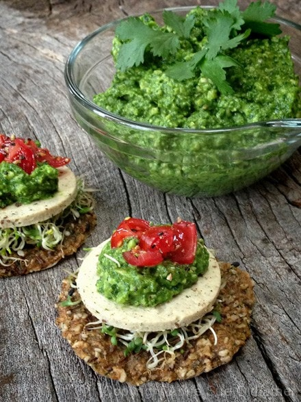
Ingredients:
Yields 1 3/4 cups
- 1 cup cilantro, (about 2 ounces)
- 2 cups spinach
- 1/2 cup cashews, soaked 2+ hours
- 1 medium avocado, peeled and pitted
- 1 Tbsp olive oil
- 1/2 tsp Himalayan pink salt
- 1/2 tsp fresh cracked black pepper
- 1 cloves of garlic minced
Preparation:
- Remove the cilantro leaves from the stems and discard the stems. Coarsely chop the leaves. Place in a food processor, fitted with the “S” blade.
- Roughly chop the spinach, add to food processor.
- Drain the cashews and discard the soak water, add to food processor along with the avocado flesh, olive oil, salt, pepper, and garlic.
- Process until it becomes a paste. You can leave it as chunky as you want or process a bit longer till it is more creamy.
- Store in fridge for 2-3 days.
Start with a stacking ring. You can use any wide cylinder shaped object,
just as long as both ends are open.
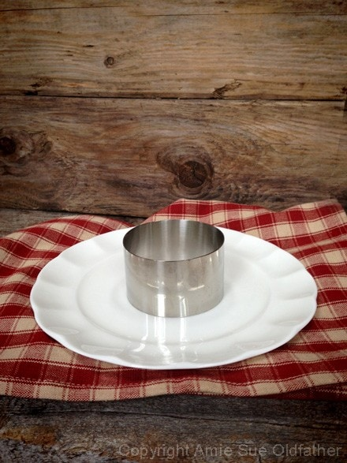
Place a dollop of pesto in the center. Leave about 1/4-1/2″ around the edges
as shown below. The pesto will act as a helping hand to hold the tomatoes
in an upright position as you place them around the ring.
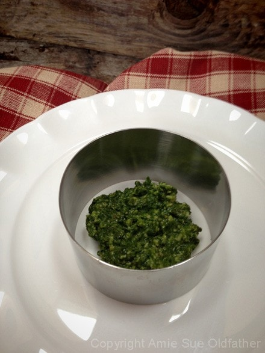
Slice the cherries in half-length wise and place them with the flesh facing out.
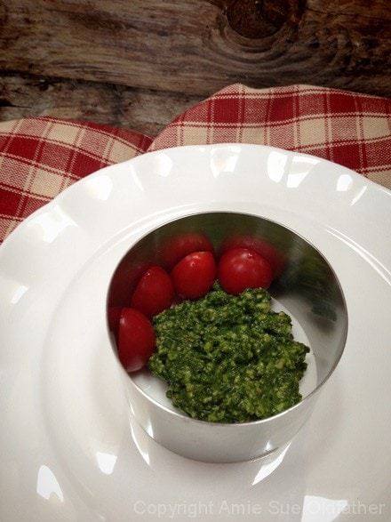
Make sure the tomatoes are snug up against one another to create a barrier.
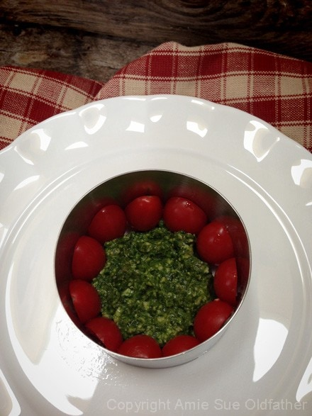
Fill the cavity with pesto, level the top and cover with plastic. Chill in the
fridge for at 30 minutes. This will help firm things up.
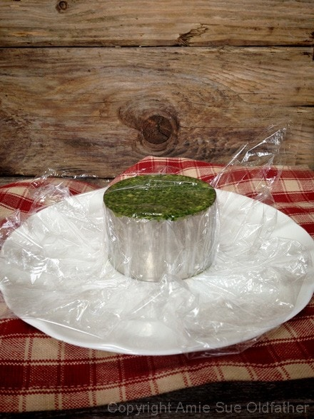
The time has come. To be honest, I am nervous to remove the ring. Will it hold?
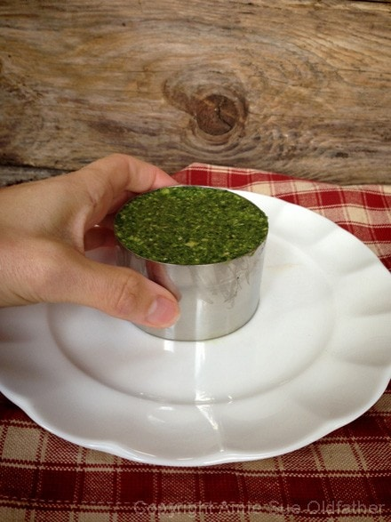
Lift straight up, nice and gentle. Eeep, I don’t want to take it off!
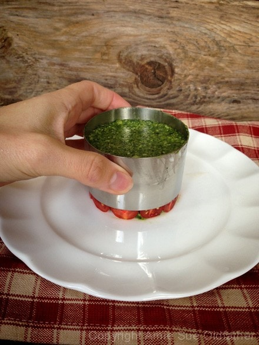
Looks pretty but will it fall once I remove the ring?
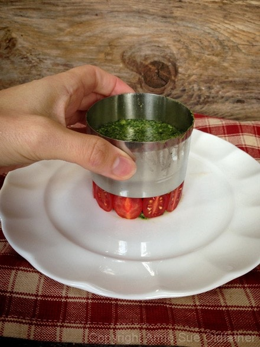
SHEW! I did it. My first pesto stack attempt. :)
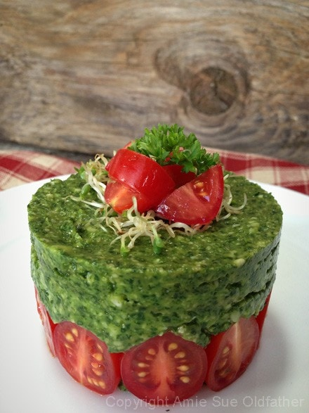
Now the easy part… surround the pesto stack with some crackers and enjoy!
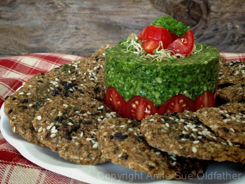
The cracker recipe can be found here.
© AmieSue.com